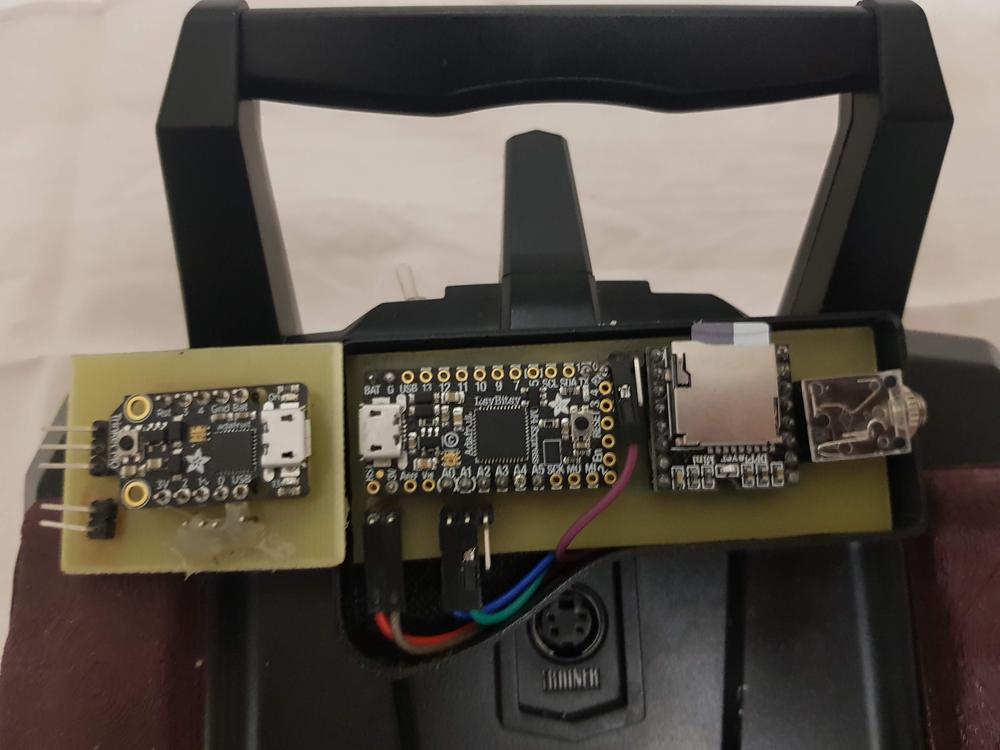

Edge Computing at the Edge of the World - PyConZA'19
whoami
- Schalk Heunis
- @schalkheunis
- Head of Big Data, AI and RPA @ Telco
- Founder @ House4Hack
Topics
- Circuit Python
- Automatic Music Categorization
- RL Music Recommendations
Circuit Python

Reading Altitude
import adafruit_bmp280
i2c = busio.I2C(board.SCL, board.SDA)
sensor = adafruit_bmp280.Adafruit_BMP280_I2C(i2c, address=118)
sensor.sea_level_pressure = 1013.25
print(sensor.altitude)
Topics
- Circuit Python
- Automatic Music Categorization
- RL Music Recommendations
LibRosa
- https://librosa.github.io/librosa/
- LibROSA is a python package for music and audio analysis.
- It provides the building blocks necessary to create music information retrieval systems.
VGG16

Hierarchical Clustering
Euclidean distance / Ward linkage

Topics
- Circuit Python
- Automatic Music Categorization
- RL Music Recommendations
Feature Engineering
- Use CRRC Sim
- Connect RC Transmitter
- Hack to produce JSON output of telemetry
Multi-arm bandit
- Start with pure explore
- Balance explore and exploit, based on evidence
- Never stop exploring
Epsilon-Greedy
epsilon = getEpsilon(evidenceCount)
do_explore = random.random() < epsilon
if do_explore:
probs = [1/classCount] * classCount
else:
probs = classifier.classify(make_features())
Other Strategies
- UCB
- Thompson Sampling
Training

- Binarize features (Bernouli Naive Bayes)
- Folder counter
- Feature counter by folder
Experiment

From scratch

One round of training
Hold Out

Packaged
Topics
- Circuit Python
- Automatic Music Categorization
- RL Music Recommendations
Future Work
- Car version using GPS
- Better Automatic Music Categorization
- More flying
Take-Aways
- https://github.com/house4hack/flyskydj.git
- https://circuitpython.org/
- https://librosa.github.io/librosa/
- https://github.com/bgalbraith/bandits